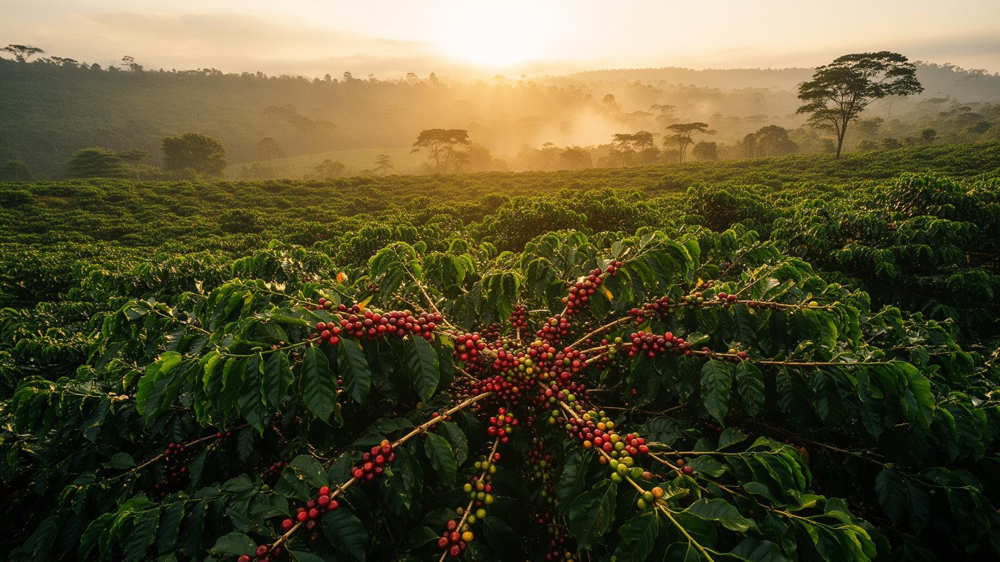

Organised by the Ministry of Agriculture, Animal Industry and Fisheries (MAAIF), the Uganda International Coffee Expo 2026 brings together coffee farmers, processors, exporters, investors and industry professionals to celebrate Uganda's coffee industry. The event will take place from 16th to 18th September 2026 at Speke Resort Munyonyo in Kampala.
The expo will provide a platform for networking, knowledge sharing, business partnerships and showcasing innovations across the coffee value chain. Participants will explore new market opportunities, sustainable farming practices, modern processing technologies and the future of Ugandan coffee in the global market.
Expected Attendees
Exhibitor Booths
Countries
Speakers